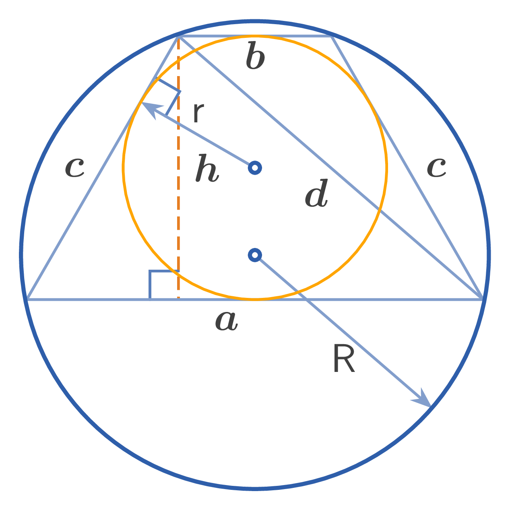

Bases of a trapezoid: $a, b$,
Leg: $c$, Midline: $q$,
Altitude: $h$,
Diagonal: $d$,
Radius of inscribed circle: $r$,
Radius of circumscribed circle: $R$,
Perimeter: $L$,
Area: $S$
1. Relationship between bases and legs in an isosceles trapezoid with an inscribed circle: $$a + b = 2c$$
2. Midline of the trapezoid: $$q = \dfrac{a+b}{2} = c$$
3. Relationship involving the diagonal: $$d^{2} = h^{2} + c^{2}$$
4. Radius of inscribed circle: $$r = \dfrac{h}{2} = \dfrac{\sqrt{ab}}{2}$$
5. Radius of circumscribed circle: $$R = \dfrac{cd}{2h} = \dfrac{cd}{4r} = \dfrac{c}{2}\sqrt{1+\dfrac{c^{2}}{ab}} = \dfrac{c}{2h}\sqrt{h^{2}+c^{2}} = \dfrac{a+b}{8}\sqrt{\dfrac{a}{b}+6+\dfrac{b}{a}}$$
6. Perimeter of a tangential isosceles trapezoid: $$L = 2(a+b) = 4c$$
7. Area of a tangential isosceles trapezoid: $$S = \dfrac{a+b}{2} \cdot h = \dfrac{(a+b)\sqrt{ab}}{2} = qh = ch = \dfrac{Lr}{2}$$